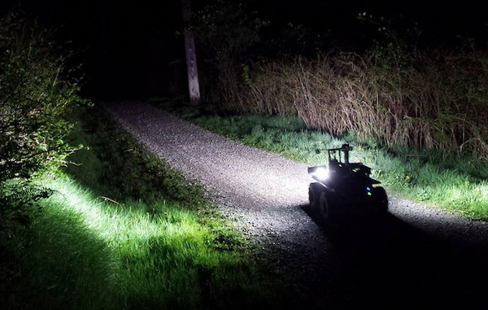

|

The Autonomy Lab's research goal is to increase the capabilities, robustness and overall autonomy of mobile robot systems. Our research has these main themes:
- applying the latest AI-based sensing techniques to robot navigation and human-robot interaction
- creating tools and techniques for programming, simulating and evaluating populations of robots
- applying models of animal behavior to extend or improve robots, particularly multi-robot systems
The Lab is directed by Richard Vaughan. Our computer systems are managed by Sepehr MohaimenianPour.
Part of the NSERC Canadian Field Robotics Network
|
News
|
 Autonomy Lab
Autonomy Lab